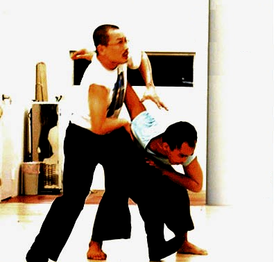
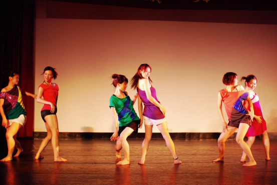

流動樂園 '09
國立臺灣大學藝術季
藝術季暨畢業季開幕式
樂園尋徑
5/01 | 17:30 |椰林大道
2009年開幕儀式，讓我們歡迎流動樂園蒞臨台大椰林！除了校園演唱會搭配各式各樣的表演團體之外，今年還有螢光派對為當晚的狂歡登峰造極。在光影交錯的虛幻之間，請盡情伴隨歌舞流動，牽引心跳一起起飛。
聽音樂，或漫步吹風，和同學、藝人分享創作感動；加入螢光派對，感受節奏幽光暗通款曲的激情。走出圖書館或實驗室吧，你的青春值得一點藝術、一點瘋狂！歌唱、演奏、表演、舞蹈、時尚和一些脫離常規的趣味——流動樂園從傅鐘盧廣仲開始，17:30準時揭幕。
活動細目 (按舞台序)
第一舞台/傅鐘: 17:30起始
盧廣仲, 詞曲創作社
第二舞台/文學院: 18:00起始
交響樂社演奏, 國樂社演奏, 韋禮安演唱, 廖文強演唱
第三舞台/土木系館: 19:15起始
張懸演唱, 伊甸之夢創意彩妝時尚展, 1976演唱, 第18th熱舞社老人舞, 蚊子大象樂團, 陽光小查理Sunny Charlie樂團, 師長致詞
開幕不收門票，
只要一顆樂於想像的心...
About the paradise
關於「流動樂園」
還記得嗎？小時候，停車場幻化為一個仙境的驚喜—摩天輪、旋轉木馬、煙火、氣球、棉花糖，琳瑯滿目。眨眼間，十幾年過去，百年校園也可以變為一座令人回味無窮的歡城。流動樂園穿越了無數城市，此刻，駐足台大藝術季。
你注意到了嗎？校園有些寧靜的騷動，椰林婆娑，校舍巍峨。向西一望，醉月湖微醺，倒影如畫。在杜鵑由春轉夏的時節裡，藝術好比人與樂園一角的相遇：色彩流連、音符穿梭、姿態逬發、味覺狂歡——然後飽滿地出發旅行吧，與你的童真一起。
海明威說：「如果你夠幸運，在年輕時待過巴黎，那麼它將永遠跟隨著你；因為巴黎是一席流動的饗宴。」
這裡當然不是巴黎，但我們可以給你巴黎的美麗以及巴黎的，想像力。 厭倦現實的沈默了嗎？
歡迎光臨，這座漂浮而不沈沒的流動樂園！
Special activity
歡迎光臨，
台大藝術樂園
Attention please！
看到遊樂園地圖了嗎？請跟隨以下指示，樂園大獎等你/妳帶回家！
除開幕式之外，2009年台大藝術季有六類型活動：裝置藝術、狂想x影展、藝文沙龍、駐校藝術家、展覽、與社團表演。
各類型活動底下有各式各樣的精彩項目，可參見手冊或網頁詳情。每類型活動都有其專屬的遊樂園/設施貼紙，將於每一項目定點放置或發放。
Step 1
請參與各類型活動裡的至少一個項目
Step 2
在活動地點索取貼紙之後，記得貼於地圖上屬該活動的位置。盡情設計心目中的台大樂園吧！
Step 3
收集到六張不同貼紙即可參加抽獎！得獎名單會公佈於藝術季網站，並各別通知領獎方式。
孩子們！還在等什麼？流動樂園不可錯過，歡迎一同遊園驚夢！
藝術零距離－
兩廳院圓夢計劃
參與藝術季，給你拿不完的優惠！為讓人人都能共同圓一個藝術的夢想，以提升藝文氣習與素養，我們有100張的藝文活動優惠卷等你帶回家！
藝文活動優惠卷，共30張發給一般學生，70張發給清寒在學生（皆含研究生）。
獲得方式
無論一般生或清寒生，皆須參與藝術季的集點活動（請參照手冊台大樂園附圖與規則），並完成藝術季問卷和撰寫心得四百字。
一般生完成上述事項之後，請於5/21前將資料整理好並攜帶學生證影本放置於臺大課外組之藝術季回饋信箱。資格審核後即可參加抽獎。抽獎日期為5/26，得獎名單將在5/27公告於藝術季官方網站、臺大Info、PTT等。
清寒生亦與一般生一樣，皆須於5/21前攜帶學生證影本、符合資格之集點卡、完成之問卷以及心得至課活組藝術季信箱。唯一不同的是，清寒生無須參與抽獎，但請記得領取號碼牌，號碼至70號，額滿為止。若未額滿，剩餘票券之名額提供一般生參加抽獎使用。
Installation Art
裝置藝術
時間倒轉
回到國小純真的那一刻
仍不忘國中真誠的言語
穿上制服 背上高中書包
坐在總圖前的草地上
帶著滿滿的回憶
望向
椰林大道。
啤酒積木城
Cheers! 乾杯!!!
隨著慵懶的Blue節奏搖擺著
就讓時間停在最歡樂的那一刻
瞬間
結束
留下流動樂園的短暫歡樂時光。
Exhibitions
這是藝術新品種！

© 陳珠櫻
- 生物藝術特展
5/3-5/31│總圖一樓多功能展覽室 - I.A.S. - 螢光生物派對
5/1│18:00 ~ 22:00│二號館(舊物理館)正門口 (請至首頁索票系統登記領票) - DarwinNOW巡迴展
5/3 - 5/31│農業陳列館
自電腦科技與網路技術的發展普及以來，藝術家便不斷投入數位藝術的前端領域，無論是以網路、數位影像、聲音、電子材料做為創作媒材，或是針對網路世界與數位生活所引發的現象進行思考，並將過程轉為創作的概念基礎。數位藝術因具可複製性、多樣化的表現方式、互動性，使其成為認識藝術快速而便捷的形式，更讓一般人與藝術領域間的障礙降低，然而該現象所透露的訊息，是整個藝術本質的改變：承襲自表現主義起，藝術家透過作品著重表現內心的情感，對現實扭曲和抽象化，演化為現今與人類相關事物之探討。理性的科技、哲學、及文化研究改變了傳統藝術的主題與結構，藝術的表現手法和創作思維則深深地受到科技與網路數位時代的影響。
© Summer, 黃致傑
而科學結合藝術的趨勢，在近代生物學發生革命、建立基礎後，迅速湧入生命科學中。生物藝術開創者Eduardo Kac於1997年將晶片植入自己膝蓋，大聲宣布Bio Art的疆界開啟。簡單而言，生物藝術的兩種面向為：
- 使用生物體（如細胞、基因、器官）或仿生、擬真的物質（人工器官、模型動物、標本）做為創作媒材的藝術。
- 以生命科學中的某種機制、概念或哲學（如生理系統、多樣性概念、或emergent properties）做為創作原點的藝術。
若探究近代生物學的脈絡，除了Mendel開創遺傳學、Watson & Crick建立了分子生物工具，造成新的研究方法與思維外，在觀念上影響最深，並使生物學自博物學中獨立自成一門的學者，則非達爾文（Charles Darwin）莫屬。達爾文打破超時空的創造論，提出著名的物種原始與天擇說，讓世界了解生物並非由神所創造，而是因為身處不同環境與時空中，一系列因果的呈現。達爾文的學說在近代思潮中是獨一無二且獨具慧眼的，甚至可說他建立了近代價值觀的哲學系統：這反映在人文社會科學以環境、變遷等說法解釋社會中的各種競爭、消長、滅亡…等等文化現象。
此外，演化與生態學的結合，則幫助人類重新審視人類在地球上的地位、與環境間的關係，並協助改善人類的行為與態度，例如綠色概念在建築學、城市計劃、室內設計中的應用，以及資源回收再利用系統的建立，都是透過模擬環境中固有的物質、能量循環利用，以維持地球環境的穩定，並使人類的存續得以延長。
© Lin, PeyChwen
生命科學是最晚興起的知識，然而它與人類的關係卻最為密切，也包含許多亟待解決的議題。目前國際間對於後生物時代(post-biological age)的討論正熱烈地展開，反觀我們對於生物藝術的認知，仍然停留在生態攝影的山林花鳥與壯麗景緻的繪畫，這對於以快速變化和接軌國際潮流作為求生法則的台灣而言，實在是藝術與生命科學界的一大缺憾。
因此，藉由達爾文兩百年誕辰、同時也是物種原始出版一百五十年的全球盛事之際，台大藝術季將與台大生命科學院聯合舉辦生物藝術特展暨生物數位視覺藝術競賽作品展，我們網羅台灣當代知名藝術家，與新生藝術工作者的經典作品。目前生物藝術是難以被定義的，因為它涵蓋了奧妙的生命、與最細微的觀察。
我們無法預測它將成為什麼形式，但是我們可以從藝術世界既有的品種中，找尋它演化的蛛絲馬跡，想像它所具有的樣貌，這也是本次展覽最獨特的信念。
每一次突變，都有可能是一場巨變的契機，我們期望透過這個展覽，激發未曾出現的觀點，最終讓生命科學不再是象牙塔頂的幽室、宗教與傳統道德批判的對象，而是我們重新認識世界的方法。
《室內樂》
生活設計展
5/1-12 | 活大103 / 104 展覽室
設計者:李尉郎 展品: The TOFU
下雨了，怎麼辦？沒關係，我們有令人回味無窮的室內樂園！無論是大人小孩，生活展覽的創意讓下雨天的室內生活也能充滿趣味。
以「當生活遇見設計」為理念，由設計師創意包裝的「室內樂」，其生活用品及擺飾不只營造一種生活的樂趣，連我們展覽場地的配置本身，也是一個產品。除了靜態的作品展覽，我們也將在展區播放設計相關的影片，如設計師創作的過程、創作理念、或關於設計展的資訊等等，讓大家對設計此一領域有更進一步的認識。有人說，設計與藝術最大的差別，就是前者必須著地。藉由「著地的藝術」，我們希望參與者不只能體會設計師創作的巧思，也能培養自己的生活品味。
這次展覽另一個目的是讓大家注意到台灣的創意能量。我們的展品大多出自台灣的設計家，其中很多都獲得了國際或國內的重要獎項。
知名設計師李尉郎（天晴設計）、國際生活用品展覽中屢獲佳績的桔思創意、開發出造型衣架的葉朵設計皆受邀參展。新生代的創作如華梵大學工設系先前主辦的「新椅代設計展」展出作品。
台灣產業從代工到自創品牌，「設計」除了外觀的美感及產品的實用價值之外，更融入文化思想，以品牌理念將同質商品畫龍點睛。藉欣賞台灣優異的設計商品，希望激發台大學生及年輕一代對用品設計的創意能量，看見台灣的創造力。
流動樂園的靜態展覽，讓參與者能同時欣賞動態的藝術表演以及體驗靜態藝術的樂趣。藉由生活用品創意展，讓創意改變平凡的生活，讓我們活在藝術之中！
蛻變後的美麗－
台大附幼馬賽克藝術展
5/1-5/22 | 台大第一活動中心一樓天井
小小藝術家的生命，多了什麼樣的色彩和想像？一步一腳印，一塊塊以磁磚拼起的昆蟲世界，將展現孩子們與大自然、與藝術之間最直接的對話。
我們的開幕式在5/4的10:00舉行，地點是台大第一活動中心一樓天井。此外，活動期間每週有三次（星期一、三、五12:10-12:30）的特別導覽。其中一次還會由小朋友親自解說。馬賽克形式的萬花筒作品，為你帶來童年的新奇！
ZhuXiao YiShuJia
駐校藝術家
知名藝術家的校園進駐，以不同形式的動態活動，為台大點綴濃郁的人文氛圍。天天有表演、天天很藝術，駐校藝術家給你目不暇給的五月天！
天天有表演、天天很藝術
駐校藝術家給你目不暇給的五月天！
| Mon | Tue | Web | Thu | Fri |
| 5/4 曙光劇團駐唱 19:00@ 丹堤 |
5/5 街頭藝人出沒 12:00@ 鹿鳴 |
5/6 曙光劇團駐唱 19:00@ 丹堤 |
5/7 實踐大學演出 19:00@ 活大 |
5/8 肢體工作坊 19:00@ 戲劇系 |
| 5/11 李國修演講 18:30@ 普103 |
5/12 曙光劇團演出 19:30@ 神祕地點 |
5/13 曙光劇團演出 19:30@ 雅頌坊 |
5/14 街頭藝人出沒 12:00@ 鹿鳴 |
5/15 肢體工作坊 19:00@ 戲劇系 |
※所有活動皆於開演前半小時入場。
【曙光劇團】
音樂歌舞齊發，
給你視覺與聽覺的至高享受
今年，第十五屆台大藝術季邀請著名的曙光劇團蒞臨台大，將呈現兩種不同形式的演出：一是風靡各界、好評不斷的兩場百老匯音樂劇《I Love You, You are perfect, now change》精華選粹演出，另一項則是藝術季團隊精心規劃的校園咖啡館駐唱，要帶給所有觀眾耳目一新的視聽覺享受！
I Love you, You’re Perfect,
Now Change
（本活動與台大藝文中心共同舉辦，參與青年藝術家展演系列活動）
劇名取「Love, Perfect, Change」簡稱為「LPC」，是一部外百老匯音樂劇，從1996年首次公演至2008年謝幕共發表5,003場，並在世界各地由不同團體詮釋演出。本劇以「愛情」作為核心主題，描述從初戀、熱戀、結婚至死亡等不同的人生階段，劇情風格輕鬆明快，曾以「舞台版六人行」（Friends On the stage）作為宣傳稱號，將日常幽默切割成不同的片段，讓觀眾輕鬆在劇中找到屬於自己感動與歡樂的片段！
‧5/12, 13 19:30 雅頌坊小教堂
(本活動需索票，4/27晚上八點開始開放)
百老匯名曲重現
校園咖啡館駐唱
除了帶來精彩的LPC百老匯音樂劇演出，曙光劇團今年特別與台大藝術季合作企劃，進駐至台大校園的筑軒丹提咖啡館 (即管院旁的丹堤咖啡) 作Live演唱，重新詮釋歷年來知名海內外的百老匯經典歌曲，如《Aida》、《Wicked》等作品。似曾相識的旋律、豐富迷人的嗓音、溫柔洋溢的燈光，再加上貼心的軟性飲料，在初夏五月的晚間校園，咖啡館裡上演的滿是藝術生命力，流動的樂園在此稍作休憩，等待並且迎接明日的曙光！
‧5/4, 6 19:00 筑軒丹提咖啡館
(本活動需索票，4/27晚上八點開始開放)
【表演幕後】
李國修+符宏征，揭開人生戲路與身體語言的神秘面紗！
集編、導、演與劇團負責人於一身，二十多年來帶領劇團巡迴超過海內外22座城市、繼續打破1311場次演出紀錄，《屏風表演班》創辦人兼藝術總監李國修要與我們分享他成果豐碩的戲劇人生！達爾文、伽利略之後，《動見体劇團》藝術總監符宏征今年將續至台大藝術季開授「表演肢體工坊」課程，為我們揭開劇場表演的重要環節─肢體開發與展現，邀你一起「讓身體說話」！
度過人生，千萬認真
─李國修的戲劇人生觀
李國修，身為現今創作力最豐盛的台灣劇壇人物，屏風表演班成立至今共發表了38回作品，其中李國修就編寫了31回。作品風格多樣，以戲劇型式表達對生活、生命的觀照與感受。對創作投入百分之兩百精力、對事物投以全然的好奇與喜愛、對台灣這片土地表達持續的關懷與溫情，李國修一步一腳印未曾間斷，繼續朝向理想及更廣闊的劇場路邁進！在他精彩的戲劇人生觀裡，不管是人生如戲、還是戲如人生，李國修要告訴大家，最重要的是學習如何待人處事，認真過生活――度過人生，千萬認真。
‧5/11 18:30 普通大樓 103教室
符宏征老師
─肢體表演工作坊

符宏征，國立台灣大學中文系畢業、國立藝術學院劇場藝術研究所藝術碩士。現任國立台灣大學戲劇學系、台北藝術大學戲劇系、台灣藝術大學戲劇系、台南藝術大學應用音樂系兼任講師，並身兼《動見体劇團》藝術總監、編導。符宏征善於挖掘劇作與人物內在的深沈感觸，在舞台視覺上「造境」，也非常在乎肢體的情緒、與聲音（音樂、音效、語言）的效用。且讓專長導演、肢體教學的符宏征老師帶領我們開啟身體語言的神秘之鑰！
‧5/8, 15 19:00 戲劇系110排練室
(本活動需索票，4/27晚上八點開始開放)
【特別來賓】
《人體裝置舞動與展演》
實踐大學媒傳系，釋放身軀的直覺魅力！
今年藝術季團隊特別走訪實踐大學設計學院，邀請媒體傳達設計系製作的《人體裝置舞動與展演》精采節目至台大校園演出。以該校設計學院大一學生的「人體造型」課程作為創作基礎，加上形、影、光、色、音樂、舞動等多元媒介交織而成，呈現出靜態的藝術美感與動態的故事語言，帶領我們遊走具象與抽象之間豐富的藝術地帶！
‧5/7 19:00 活大禮堂
【駐校驚喜】
街頭藝人午間出擊，
見證舞台從城市搬進校園的奇蹟！
除了室內的精彩表演，駐校藝術家也邀請大家多多走出戶外，將匆忙的午餐行程放慢，張開且擴大自己的感官，在晌午最暖和、陽光最耀眼的時刻，仔細注意台北市知名的專業街頭藝人，會悄悄地出沒在台大校園的角落，逕行上演一場流動樂園的華麗Party，讓你仿若置身充滿驚奇與活力的城市街頭！
‧5/5 12:00 鹿鳴廣場
‧5/14 12:00 鹿鳴廣場
【省錢看戲】
NTU-TKTS
天天有表演的駐校藝術家，不只規劃了兩週密集的校內活動，我們也與《綠光劇團》、《臺灣戲劇表演家》、《台南人劇團》、《創作社》等單位合作，針對其五月份以後的表演活動，設計「台大學生購票優惠方案」，提供台大學生專屬的購票優惠，讓台大同學不僅有校內表演可看，也能用最優惠的方式欣賞校外大型劇團的精彩演出，以實際行動表達對表演藝術與劇場的支持！
詳細優惠內容與辦法請見擺放在活大的NTU TKTS票亭，或上 NTU TKTS網站。
Art Movies
《狂想x影展》
流動樂園的木馬隨著歡樂氣旋起舞，馬戲團的快樂魔法將奇想全數釋放；奔馳的想像力踏亮了電影，光影的藝術又演繹出另一種魔幻。在電影的奇幻世界中，一切變得無限可能…
本次的藝術電影展以「狂想」為題，選出八部電影，讓電影的天馬行空帶領我們遊走於真假虛幻之中，體驗光影幻化的視覺藝術之旅。
特別活動：
夢‧想起飛的原點─徵影活動
5/4 | 18:30 | 活大禮堂
5/6 | 14:30 | 活大禮堂
一百五十個揣摩飛行姿勢的日子，化為一幕幕影格永久保存。四部完整播映的得獎作品，及各參賽電影的精采片段，都將在這個美麗的夜晚，被所有人看見。
除此之外，專業評審李衣雲、李亞梅、陳芯怡將受邀參加發表會，與我們分享評審時的點點滴滴，以及她們的故事。
學生會文化部邀請您，共同參與台大藝術季徵影活動發表會！
室內電影院
5/4~5/6 地點：活大禮堂
| 5/4 | 5/5 | 5/6 | |
| 下午場 3:00進場 3:30開始播放 |
奇幻城市 | 亞利桑那夢遊 |
徵影作品放映 (14:30) 戀愛夢遊中 (16:00) |
| 晚間場 6:00 進場 6:30 開始播放 |
徵影頒獎典禮 | 開羅紫玫瑰 (映後座談會) 主講人：聞天祥 |
黑店狂想曲 (映後座談會) 主講人：林志明 |
蚊子電影院
5/7~5/9 地點：總圖前振興草坪
| 5/7 | 5/8 | 5/9 | |
| 晚間場 6:30開始播放 |
令人討厭的松子的一生 | 囧男孩 | 敢愛就來 |
※(如遇下雨則改為共同101/ 201/ 101)
講者簡介
聞天祥
- 資深影評人、台北電影節策展人
- 曾任金馬獎、台北電影節等電影獎項評審
- 曾任多所學校電影社指導老師
- 現任教於臺灣藝術大學電影系、輔仁大學大傳系
林志明
- 現任國立台北教育大學藝術系副教授
- 法國高等社會科學研究院碩、博士
- 專長影像美學、法國當代思潮、藝術批評等
奇幻城市 The Fisher King
5/4 | 15:00 | 活大
137分/英文/泰瑞葛蘭/羅賓威廉斯、傑夫布里吉
三年前，一位聽眾聽從著名叩應節目主持人傑克嘲諷的建議，拿槍掃射酒吧裡的群眾，傑克因而變得消沈且自責不已。三年後，他因緣際會被瘋子派瑞所救，後來還發現派瑞的妻子更是三年前酒吧裡的無辜受害者。為了彌補罪過，傑克起先想以金錢幫助派瑞卻遭拒絕，後來反被派瑞說服，幫他找尋傳說中的「聖杯」...
亞利桑那夢遊 Arizona Dream
5/5 | 15:30播放 | 活大
142分/英文/艾米爾庫斯杜利卡/強尼戴普、Jerry Lewis、Faye Dunaway
電影一開始是主角艾克索的夢，他總是夢到冰天雪地的阿拉斯加、愛斯基摩人和比目魚。在現實生活中，艾克索為了叔叔李歐的婚禮來到亞利桑那州，隨後便留下替叔叔賣車。在這裡他認識了一對性情古怪的母女，母親幻想飛翔在天空，女兒時而冷靜時而瘋狂，三人從此陷入複雜的關係...
開羅紫玫瑰The Purple Rose of Cairo
5/5 | 18:30播放 | 活大
84分/英文/伍迪艾倫/傑夫丹尼爾、米亞法羅
在美國大蕭條時代，餐廳女侍西西莉亞在生活中處處碰壁，只有藉由天天看電影來逃避生活的壓力。她瘋狂愛上電影《開羅紫玫瑰》，多次到電影院欣賞。一天，她所鍾愛的角色湯姆居然走下了銀幕與她相會，驚喜不已的西西莉亞抵擋不住他的魅力而墜入情網。直到她碰到飾演湯姆的男演員本人，虛幻與現實的誘惑使得一切變得匪夷所思、難以分辨，西西莉亞究竟會投入誰的懷抱呢？
戀愛夢遊中 The Science of Sleep
5/6 | 16:00播放 | 活大
106分/法語、英語、西班牙語/米歇爾龔特利/蓋爾賈西亞貝納、夏綠蒂甘斯柏
這是一個「現實、夢境，傻傻分不清楚」的青年的愛情故事。 生性害羞古怪的史蒂芬，腦袋瓜裡的夢不斷干擾他的真實人生。當他進入睡眠狀態時，他是電視節目中深具魅力的主持人；在現實生活中，他是一個在日曆出版商做無聊工作的員工，迷戀著新鄰居史蒂芬妮。史蒂芬無法在清醒時猜透史蒂芬妮的心意，於是他決定在夢裡尋找答案...
黑店狂想曲 Delicatessen
5/6 | 18:30播放 | 活大 | 映後座談：林志明
99分/法文/尚皮耶居內、馬克卡羅 /多明尼克皮諾、Marie-Laure Dougnac、卡文維德
在某個不明的時代背景，因戰事的發生食物非常短缺，男主角Louison為了找出老師失蹤的原因，來到了這棟大樓。女主角Julie的父親為肉商，也是這棟大樓的主事者，為了讓其中的老弱婦孺得以生存，也為了維持自我生計，不斷以招租、宰食房客的方式提供糧食來源，房客也都認同這樣的方式，掩飾過往的罪行。Julie為了免於Louison被殺害，找上潛伏在地底的反抗軍組織...
令人討厭的松子的一生
Memories of Matsuko
5/7 | 18:30 | 振興草坪
130分/日文/中島哲也/中谷美紀、柴崎幸、瑛太、武田真治
本片由真人真事改編，一路平順成長的松子，畢業後在高中擔任音樂教師，沒想到在初任教師那一年，人生急轉直下。被趕出學校之後，松子開始不停地尋找自己的真愛：有暴力傾向的作家、嫖客、忠厚的理髮師，後來甚至淪落成酒家女、殺人入獄等。出獄後的松子，與曾是自己學生的龍洋一重逢，之後又會...？
囧男孩 Orz Boys
5/8 | 18:30 | 振興草坪
103分/中文/楊雅喆/李冠毅、潘親御、梅芳、馬志翔、阮經天、徐啟文
「騙子一號」與「騙子二號」，他們兩個整天膩在一起，聯手捉弄同學、編造謊言、愛出風頭，是老師眼中的問題學生。一號說：「只要蒐集到十台大的電風扇，就可以做一個超大的龍捲風去異次元喔﹗」但去了異次元，就可以到大人的世界嗎？
敢愛就來 Love Me If You Dare
5/9 | 18:30 | 振興草坪
94分/法文/楊森姆爾/瑪莉詠柯蒂亞、吉翁卡涅
朱利安和蘇菲兩小無猜，圍繞著魔法盒子的愛情遊戲。兩個人好事壞事樣樣賭，從小到大百玩不厭，彼此重重的考驗就是要聽到那三個字...
到底他們在玩遊戲，還是真心相愛？生命一天天溜過，遊戲卻愈玩愈火熱。他們的愛，一如失控的旋轉木馬，直到…「用生命做賭注？你敢不敢賭？」「我賭！」
Art Salon
藝文沙龍
夏日流動氛圍裡，
你我遇見藝術，直接的。
透過彼此的互動，所以我們才能找到那個早已遺失的自己。
Purpose of Workshops
面對藝術，我們旁觀，所以有時覺得迷惑，有時覺得沒有共鳴，有時甚至覺得高不可攀。如果有一個機會讓我們跳脫旁觀者角度，實際參與，賦予藝術創作更多不同面向，是否可以使藝術走入生活，成為嘴上說腦裡想血裡流的一部分?
所以，藝文沙龍在5/4~5/14台大藝術季活動中精心策劃各類主題工作坊，
邀請大家與藝術進行親密接觸。
參加對象：
台大學生、教職員及校外居民或友校同學
報名方式：
講座：免費入場 無需報名
工作坊與腳踏車大賽：
寄 p2 站內信至 wenchi7872
於信中註明：姓名、連絡電話、報名活動名稱與日期
材料費於現場繳交
注意事項：
報名成功後請務必出席活動。因應課程安排需要，攝影/魔術/美食工作坊報名即須參加所有場次。玩藝工作坊可兩場次擇一或二，請務必於報名信件中註明日期。
工作坊
玩藝工作坊
5/4 | 18:30~21:30 |活大202
5/11 | 18:30~21:30 |活大202
講者：劉時學先生
主題：童年樂園，玩藝人生。
※名額限制30人
酌收材料費50元 (校外人士酌收100元)
兩場次擇一或二場參加，請於報名信註明日期
依稀記得小時候，總是喜歡東摸摸西玩玩。身邊的任何東西都可以取材，當作遊戲的最佳道具，為生活增添莫大樂趣。
這次的玩藝工作坊請到知名爺爺級的台北市文化局街頭藝人：劉時學先生。工作坊的兩堂課會從摺紙 (origami)，氣球造型 (balloon)，吸管造形 (straw arts)的簡單製作敎起。同學可以親自用雙手手完成屬於自己的造型藝術品，藉由動手做的過程，一同回味那已逝去的美好光陰。
攝影工作坊
異文化對談 5/6 | 18:30~21:30 |活大202
攝影基本技巧 5/7 | 18:30~21:30 |活大202
校園外拍 5/9 | 09:30~12:00 |活大202
講者：楊鎮豪老師、Vikram老師
主題：攝影、藝術、思維
※名額限制30人
酌收材料費50元 (校外人士酌收100元)
一旦報名成功，需參加所有場次
與台大攝影社指導老師與法籍藝術家合作。全新組合，全新課程，全新感受。透過對談方式與校園外拍，從攝影的基本技能與美感的建立循序漸進，帶給同學一連串美與攝影的激盪啟發，體驗藝術，思索藝術。
「腫囊裝」計劃
「穿」是用來發現身體的行動藝術
5/05 | 18:30~21:30 |共同203
講者：顏忠賢老師
※名額限制30人
酌收材料費100元 (校外人士酌收150元)
一旦報名成功，需參加所有場次
做
每個人用一塊一碼平方的布面挖三個洞，內填充台大的廢棄印刷紙張，現場縫成一件半「衣」半「包」的抽象腫囊造型物…
穿、演
做完的人必須穿上這件半「衣」半「包」的抽象腫囊造型物….，並拍下各種不同（並互相交換）穿法戴法背法的照片（並和不同人在同場合拍種種個人照团體照的玩的可能….），並一起穿上、成列走到校園及椰林大道遊戲、遊行
討論
現場將過程（對從「做」到「穿」的更進一步的考慮、心情、猶豫、因之引發
的種種波折）之前之中之後所發生的事進行討論
展覽、BLOG
在活動中心櫉窗展間展出這些半「衣」半「包」的抽象腫囊造型物…以及做、穿、遊行的照片與文字（之後一週將過程之討論圖文做成BLOG）為一完整展覽，記錄並呈現「穿」是用來「發現」身體的一種行動裝置藝術的可能
美食工作坊(已額滿)
5/12, 5/13 | 14:00~17:00 | 二活十樓廚房
講師：Bordenave Bernard
法式氛圍，美食樂園
想像夏日午後陽光灑落，你們我們，皆以優雅的法式姿態慢慢柔柔地創作，創作出一種態度以及簡單卻令人怦然心動的食物。
台大藝術季首次隆重推出美食工作坊，邀請到法籍美食達人 Bernard Bordenave 傳授在家也能輕鬆上手的烹飪技巧，帶領大家學會「一湯、一主菜、一甜點」的作法，進入最原汁原味的法式宴饗。
※名額限制15人 報名已經額滿截止
酌收材料費100元 (校外人士酌收150元)
一旦報名成功，需參加所有場次
魔術工作坊
5/8, 5/13 | 18:30-21:30 | 活大202
不想老是被台上的幻術眩惑？還是想要好好學一兩手自娛娛人？與台大魔術社合作的魔術工作坊，教你利用身邊隨手可得的簡單道具，讓魔術貼近生活。此工作坊為一連貫課程，總共兩堂課六小時，內容包含脈搏找牌、鈔票魔術、縮水餐巾紙等等。台大藝術季讓你成為人群中最受注目的魔法師！
※名額限制30人
酌收材料費50元 (校外人士酌收100元)
兩場次擇一或二場參加，請於報名信註明日期
講座 (免費入場)
※所有講座均於開始前 30 分鐘入場。
設計講座
「穿很低的低腰褲去革命——「做衣服」是用來療傷的殘酷劇場」
5/4 | 19:00-21:00 | 二活柏拉圖廳
主講者：顏忠賢教授
顏忠賢現為實踐大學建築系專任副教授。其建築設計與裝置藝術作品曾赴多國展覽，亦曾獲選為美國紐約MOMA／PS1當代美術館年度駐館藝術家、耶路撒冷駐市藝術家、加拿大與台北之交換藝術家、ANN亞洲藝術網絡2001年會「桌上城市」藝術家創作計畫之台北代表、以及2001台北文學獎「文學年金」創作獎等獎項。
電影作品《肉浮屠》、《醮》應邀於台北金馬國際影展參展，2001年獲邀參加「總統文化獎」紀錄片拍攝計畫。
演講內容精華片段
- 馬甲很性感還是很殘酷: 「身體」是什麼?
- 肉體」或是「身體」? (我是誰/儀式/紋身)
- 從「聖母瑪莉亞」到「美少女夢工廠」
- 國王的新衣 (教養/扮裝/找身體)
- 從「鄰家女孩」到「SM女王」
- 穿很低的低腰褲去革命: 「衣」是什麼?
- 「吊襪帶」是壹首詩 (類型/功能/性感)
- 從「衛生衣」到「龍袍」到「收驚」
- 袈裟也可以是高科技的 (織品/材質/妖怪) 從「金縷衣」到「太空裝」到「哥德風」
- 烏托邦有限公司: 「穿」是什麼?
- 穿是感覺還是幻覺 ((旗艦)店/秀/雜誌/電影) 從「龐德女郎」到「穿著PRADA的惡魔」
- 設計是「藝術」嗎? (美/三寸金蓮/三宅一生) 川久保玲腫囊裝」到「LV櫻花包」
文學講座
「用力吸吮詩奶水─詩乃文創銳意的超級養分」
5/5| 19:00-21:00 |共同101
主講者：顏艾琳
內容：談詩的跨界跟結合文創產業的重要關聯性
顏艾琳為前聯經出版公司文學主編。著有詩集《她方》、《抽象的地圖》、《骨皮肉》、《點萬物之名》、《黑暗溫泉》，以及其他漫畫評論和童詩集等九本書。曾獲全國優秀詩人獎、文建會新詩創作優等獎、創世紀詩刊35週年詩人獎、第一屆台北文學獎散文創作等多種獎項。
myfone行動創意講座
常常傳簡訊給自己的九把刀
5/6 | 19:00-21:00| 台大集思國際會議廳
主講者：九把刀
※18:30開始受理報到；
請上 http://www.myfone.org.tw/ 線上報名。活動洽詢：0961-120-130
如何在生活中擷取創意、發揮靈感？常常傳簡訊給自己的新生代作家—九把刀，首次公開分享創作10年中，如何捕捉靈感應用於文學、戲劇、與廣告的秘訣。九把刀為礦溪文學小說獎多年得主，且獲選為2006年海峽兩案十大作家、2007年誠品十大華文暢銷作家第四名、以及2008年金石堂暢銷男作家第一名。自2000年開始在網路上創作，作品主題廣泛，且多部即將改編成電影、遊戲、及漫畫。此外，九把刀於2008年導演電影「愛到底—三聲有幸」。
旅遊講座
旅途上，與音樂相遇
5/7 | 19:00-21:00 | 共同201
主講者：MOOK編輯尤可欣、Tabla鼓師若池敏弘(Waka)、Sitar琴師金光亮平(Yo）
若池敏弘（Waka）自1987年開始接觸塔布拉鼓，期間跟隨不同大師學習Benares式與Farkabad式的演奏風格，曾和多位歐美樂壇的音樂創作者合作推出跨界作品。2006年與西塔琴演奏家Yo發行專輯《流浪之音》，兩位在2007年又擔任【身聲演繹劇場】特約演奏家，並與知名青年作曲家李奕青合作，組成【前音劇場】。2008年與Yo和Janelle組成【寧靜之聲ShantaaL樂團】，結合北印度古典音樂與新疆維吾爾的絲路音樂風情，為國內外少見的音樂組合。
金光亮平（Yo）於大學時期至印度的旅行啟發對西塔琴的興趣，其後成立自由爵士樂團，融合印度音樂風格，主要在琉球從事表演活動。自2005年起，開始在印度各地演奏，並多次與Waka合作。Yo也嘗試加入效果器，使聲音有更多層次的變化；近期也與其他作曲家合作，為西塔琴增添不同韻味，為大家帶來更多流浪旅途中的風景。
音樂講座
「唱自己的歌」再探── 三十年樂史小複習
5/11| 19:00-21:00 | 共同201
主講者：馬世芳
1976年，熱血青年李雙澤喊出「唱自己的歌」口號，揉合民族主義的激情和青年世代的自覺，煽熱了彼時初起的原創歌謠火苗。「唱自己的歌」這句話承載的意念，遂跨越充滿「啟蒙意識」的1970年代，一路貫串動盪激情的1980、1990年代，直到21世紀，依舊是許多創作者心中或隱或顯的一把量尺。
一代代音樂人用他們的方式詮釋「唱自己的歌」這句話，讓台灣流行音樂成為台灣最重要的文化產品，影響了華文世界數以十億計的聽眾。「自己」是誰？答案遠遠不只一種。
馬世芳為作家、廣播人。溫文儒雅是許多人對他的第一印象；在民謠和老搖滾的研究上，馬世芳總帶給人懷舊之感。大學時代與同學合編《1975-1993台灣流行音樂百張最佳專輯》一書、27歲和朋友合著《在台北生存的一百個理由》、2000年創辦音樂社群網站「五四三音樂站music543.com」，跨足經營獨立音樂發行事業，屢獲金曲獎與華語音樂傳媒大獎肯定。2008年與中華電信合作創立「城市音樂」平台，正式轉戰音樂展演紀錄的「無實體發行」企劃。
遊藝講座
童話世界的主人翁—如果兒童劇團--趙自強老師的表演經驗分享
5/14 | 18:30-20:30 (18:00進場) |
二活柏拉圖廳廳
主講者：趙自強
趙自強從事劇場表演創作近20年，從1990年開始擔任鞋子兒童劇團「晚安Do Re Me」編導工作，開啟對兒童表演藝術的興趣。在1997年因「我們一家都是人」走紅電視。1999年、2000年因「水果奶奶」一角，連續兩屆獲得金鐘獎最佳兒童節目主持人獎的肯定，之後又成立【如果兒童劇團】，為當代兒童藝術最佳代言人。
競賽
5/8(五) 腳踏車改頭換面造型大賽
12:00~18:00 小福車棚前空地
(14:00~17:30 為投票與油漆乾燥時間，參賽同學可暫時離場)
一起來改造妳你妳你的腳踏車們吧!!!!
希奇古怪前衛創新保守實用全都歡迎!就是要你放膽來參與!前三名有令人垂涎三尺的神秘大獎喔!大家一起抗通膨救經濟讓破爛腳踏車起死回生!
腳踏車由藝文沙龍提供，報名即可將彩繪完成的腳踏車騎回家！而且前五名還有特殊小禮物 前三名可再獲得精美蹭品與獎狀一份
報名方式
寄 p2 站內信至 wenchi7872報名
於信中註明：姓名、聯絡電話；註明參加腳踏車彩繪大賽，材料費於現場繳交
※名額限制10組，酌收材料費100元（校外人士酌收150元）
※本活動接受單人或兩人一組報名
Club Performances
花城舞展
五月，百花齊鳴，霎時間台大蔚為花城
孟夏風薰，月下花前，一動念儷人展舞翩翩。
花城舞展向來為台大的盛大活動，每年的演出都吸引了超過一千五百人次的觀眾。今年的花城舞展，將延續三十年來的良好傳統，由台大三大舞社在臺上以舞會友，共同呈現最精采的表演在觀眾面前。
活動時間
民國98年5月14、15日，每日晚間六點至九點，共兩場。
活動地點
台灣大學第一活動中心大禮堂
表演內容
- 世界民族舞蹈社．四支舞
情之所至，舞而溢之，全然展現各民族的內斂與豪放，舞出最多樣的文化
- 現代舞社．四支舞
心之所嚮，舞而求之，精準掌握一舉手一投足的意涵，舞出最深沉的慾念。
- 國際標準舞社．六支舞
禮之所發，舞而儀之，完美呈現雙人舞的纏綿與熱情，舞出最誘人的曲線。
主辦單位
台大世界民族舞蹈社
台大國際標準舞社
台大現代舞

感恩‧禮讚－
原來幸福這麼簡單
來自雲端的樂音，進入五月這個充滿感恩氣息的季節，透由合唱、獨唱、器樂演奏，更大膽融合感恩心路歷程的點滴分享，交織出一段音樂與感恩的心靈之旅。將顛覆許多音樂歌詠愛情或瘋狂頹廢的形象，進而帶領觀眾體會由樂音撼動人心的心靈之美，清新不失活潑，激發每個人內在良善的品質，此乃追溯藝術對人類社會的種種影響中，最重要的訴求與存在價值之一。
表演資訊
時間：5/2 全天
地點：活大
演出人員
臺灣大學福智青年社
政治大學福智青年社
師範大學福智青年社
淡江大學福智青年社
臺北科技大學福智青年社
關於福智青年社
福智青年社秉持成就青年學子健全、圓滿人格的使命，在校內舉辦各項重視環境永續、良善人格及生命教育之活動；其中亦舉辦一系列有關藝文教育推廣的活動，諸如儒家思想、論語讀書會，形式更是包含系列展覽、系列講座、跨校型晚會和音樂會等等。近年來更推廣音樂，響應校方推廣人文、藝術等通才教育的措施，希望透由音樂性的藝文演出，激發每個人內在良善的品質，樹立社會上正向的影響力。
說唱藝術社
期末公演
創社十週年 超豪華公演確定!!!
說唱藝術社將於 5 月 8 日 (五)，於視聽小劇場舉行一年一度的豪華版期末公演！延續著前幾年的慣例，今年的期末公演仍然可以看見「相聲劇」的演出；當然，經典的段子也不會少！保證讓大家度過愉快的星期五夜晚，歡迎攜家帶眷前來參加！
外國人也喜歡相聲
繼去年來自德國的阿德成為說藝的一分子之後，本學期，來自美國的Bryan加入了說唱藝術社！熱愛相聲的他，會與說唱藝術社擦出什麼樣的火花呢？！
第十四屆鋼琴大賽
台大鋼琴社將舉辦一場全國性的鋼琴大賽！高中、大專院校非音樂系所的學生，都歡迎報名參賽。即日起到4/17皆可報名，詳情請見PTT – NTUPiano
主辦單位
鋼琴社
表演資訊
5/9 09:00~12:00 @ 活大
遊子吟─台大藝術季暨台大懷筑古箏社 2009 公演
公演主軸定位在「感恩、感謝」自己親愛的人，就像遊子雖遠遊四方但仍念念不忘母親恩情，一系列的活動以音樂浪漫傳情，不論是、親子、情人、朋友或師生…，我們都希望能讓觀眾藉音樂表達自己的心意。
主辦單位
懷竹古箏社
表演資訊
5/12 18:00~21:00 @ 活大
2009台大外文系
畢業公演-
Metamorphoses
本齣劇的劇本改編自古羅馬詩人奧維德(Ovid)的同名史詩中的十則故事。以水池為中心，我們在舞台上變換著面貌，展演一個又一個慾望的形體。我們保留了原劇對於愛之救贖力量的樂觀，也援引來自柏拉圖著名的《會飲篇》中對愛情的詮釋，以及柏拉圖式愛情之概念，對劇本做進一步的改編，以突顯人類慾望中黑暗、具毀滅性的一面。
演出資訊
演出時間∕5.20(三) 7:00PM
5.21(四) 7:00PM
5.22(五) 7:00PM
演出地點∕台大視聽小劇場
購票資訊
票價∕新台幣50元
預售∕5.4-5.8 1210-1310 小福前攤位
5.6 1830 讀劇會活動現場(視聽101)
- 購買預售票，可參與演出後的抽獎活動，獎品總價值高達6000元；憑預售票票根，購買節目單還可享有75折優惠
- 現場購票∕5.20-5.22演出當天1800起，由現場櫃檯統一販售票券
- 現場購票不享有預購票券之優惠
主題曲演唱∕趙恬儀老師
舞台設計∕黃愛國
燈光設計∕劉偉申
服裝設計∕范懷之
舞蹈老師∕羅孟真老師
Special thanks
特別鳴謝
本屆台大藝術季特別感謝贊助對象為：
台北市政府文化局
http://www.culture.gov.tw/
永大文教公益基金會
http://www.yungtay.com.tw/
華視文化教育基金會
http://ccef.cts.com.tw/foundation/
台灣大學校友會
http://www.ntuac.org.tw/
MAN-Q CORP 晶盟實業有限公司
http://www.man-q.com.tw/
sugus 瑞士糖
http://www.sugus.com.tw/
行政院青年輔導委員會
http://www.nyc.gov.tw/
另外特別感謝贊助我們實物的：
- 古亭國小
- 民族國中
- 大安高工
- 新盛油漆行
- sugus瑞士糖
協辦單位：批踢踢兔 (ptt2.cc)